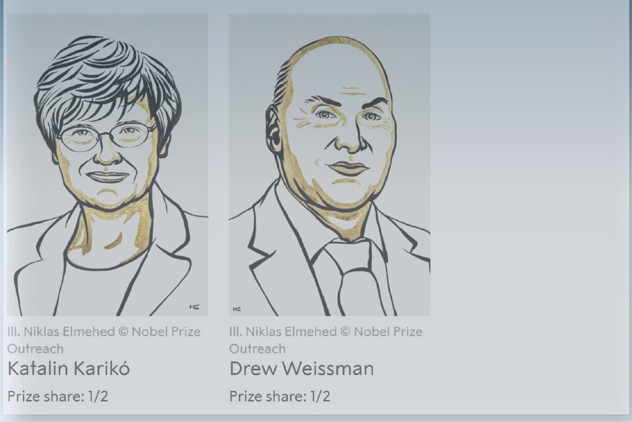
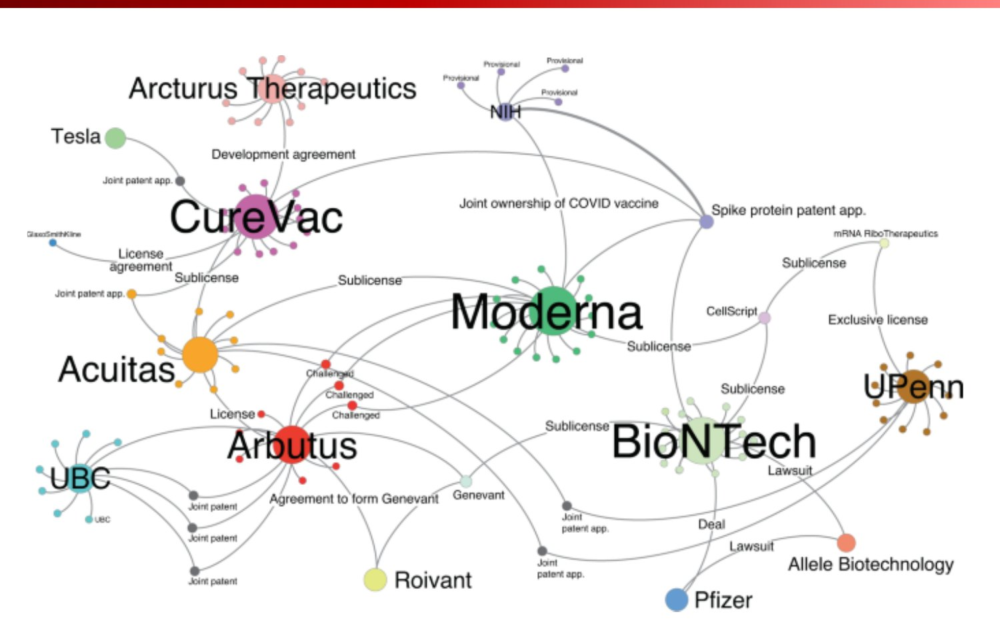
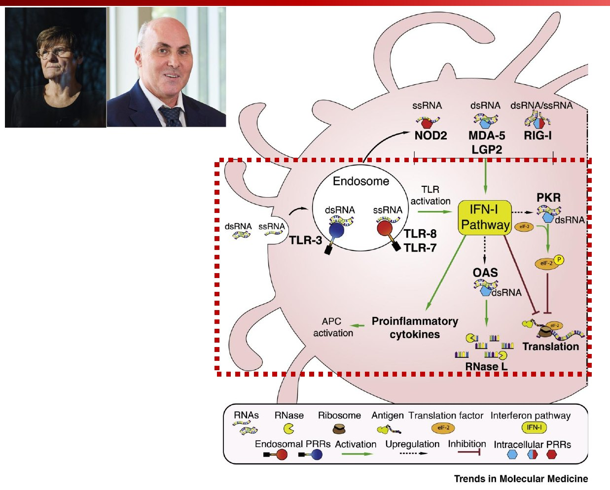
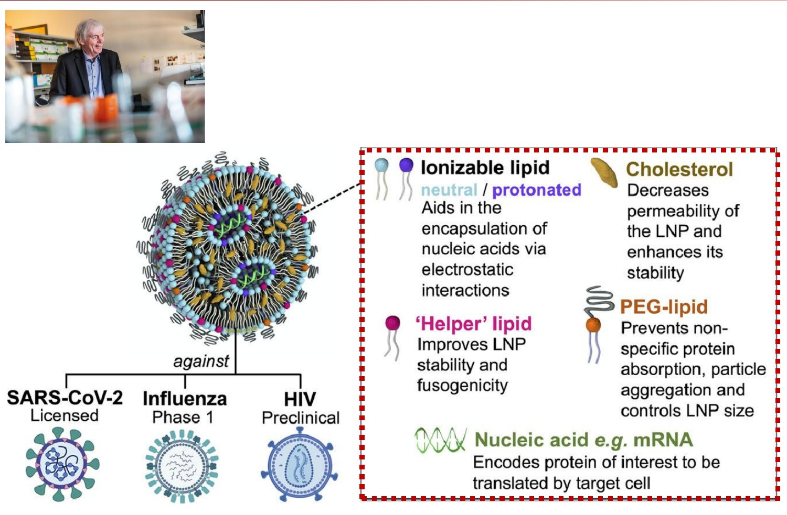

PHAR278 · 신약개발개론 · 시험대비 노트
4주차
신약의 분류 2 ·
노벨생리의학상 1천연물·개량·제네릭 마무리 + 2023 노벨상 mRNA 백신
상세요약개념문제 15중간고사 대비 실전 31암기카드
앞 절반(천연물·개량·제네릭)은 3주차와 같은 슬라이드라 새로 추가된 Q&A만 정리했어. 핵심은 뒷 절반 —
카리코·와이스먼, 슈도우리딘(Ψ), LNP. 2024엔 “mRNA 역사”, “Ψ mRNA 단백질 생성량”, “서열 설계” 문항이 나왔어.
CONTENTS
- 00한 장 지도 · 2024 기출 분석2
- 01Q&A 4개 + 분류 복습(추가분)3
- 02노벨생리의학상 20236
- 03생물학 기초: DNA → mRNA → 단백질7
- 04mRNA 백신의 역사 · 특허9
- 05핵심 발견: 염증 → 슈도우리딘12
- 06전달 기술: LNP15
- ★중간고사 대비 실전문제17
- ✓암기카드25
4주차00한 장 지도 — mRNA 백신 = 기술 4개의 결합슬라이드 74 + 2024 리뷰
한 줄 요약mRNA 백신 = mRNA 합성(1984) + 염기 변형(2005, 노벨상) + LNP 전달(Cullis) + 산업화(BioNTech·Moderna) → 2020 팬데믹에서 1년 만에.
| 막혔던 벽 | 누가 뚫었나 | 어떻게 |
|---|
| ① 실험실에서 못 만든다 | Krieg·Melton (1984) | T7 중합효소 IVT 합성 |
| ② 넣으면 염증 + 단백질 안 만들어짐 | 카리코·와이스먼 (2005) | U → 슈도우리딘(Ψ) |
| ③ 세포 안까지 못 간다 | Cullis (LNP) | 이온화 지질 나노입자 |
| ④ 돈·생산 | BioNTech · Moderna · DARPA | 투자·공장·임상 |
💡 앞 절반(분류)은?
천연물·개량신약·제네릭 슬라이드는 3주차 노트 PART 05~06과 같아. 여기선 새로 추가된 Q&A 4개 + 글로벌 요건 국가별 기준 + 용출시험 + 생동성 vs 임상만 정리했어.
🎯 2024 중간고사 — 이 범위에서 나온 것
| 문항 | 정답 포인트 (교수님 해설) |
|---|
mRNA 역사
(옳지 않은 것) | “종양학계보다 백신 개발에서 더 호의적” ✗
→ 원래 백신 목적이었는데 잘 안 되자 종양학계 쪽으로 시도 (방향 반대!) |
| 슈도우리딘 mRNA | “단백질 생성량 차이는 없었다” ✗
→ 보통 10~11배 더 많았다 |
| mRNA 서열 설계 | “아직 해결해야 할 문제로 남아 있다” ○
서열을 알아도 아미노산 하나에 코돈 조합이 여러 개 |
| 천연물·개량·제네릭 | 조인스 vs 프로스판 · IMD/API · 생동성 · 서방정/장용정 → 3주차 노트 |
⚠ 5주차와 헷갈리지 말 것
2024 기출의 AlphaFold·노벨화학상, microRNA는 노벨상 2부(5주차) 내용이야.
신약개발개론 · 4주차 신약의 분류2 · 노벨생리의학상12
4주차PART 01-A지난 시간 Q&A 4개슬라이드 2~5
1싸면 신약 성공 가능성이 높아질까?
아니. 낮은 가격은 가치·접근성의 강점일 뿐, 허가·개발 성공의 대체 근거가 아님.
성공 = 임상 근거 × 품질 × 개발성 × 시장성 — 곱셈이라 하나라도 0이면 0
‘저가 = 허가 용이’ ✗ — 가격은 규제 기준을 낮추지 않음 (가격이 힘쓰는 곳 = 시장성: 급여·채택)
2천연물의 ‘소량 성분’은 무시해도 될까?
아니. 소량도 관리 대상 → 전체 제품 안전성 평가
① 성분 규명: LC–MS · 지문분석(fingerprint) ② 규격 설정: 표지성분 · 불순물 한도 ③ 안전성 검증
‘저함량 = 무위험’ ✗ (독성 세기·노출·축적·상호작용) · 핵심 = 완전한 분자 목록이 아니라 재현 가능한 통제
3천연물이라 더 안전할까?
아니. 기본 안전성 기준은 합성신약과 동일 + 원료·조성·오염·상호작용·배치 변동 관리가 추가
‘천연 = 안전’ ✗ — 천연 독성(아리스톨로크산), 중금속·농약 오염, 성분 변동, 약물상호작용(세인트존스워트 → CYP3A4 유도)
4한국 신약개발의 장벽 & 바이오시밀러의 가치
장벽: 자본 + 장기 실패위험 + 글로벌 임상·허가·판매 역량
바이오시밀러 = 단순 복제품 ✗ → 복잡한 생물학적 제품의 일관된 재현 (세포 생산 + 정밀 분석으로 “고도 유사” 입증 → NMR 등) → 진입장벽 = 고부가가치
경쟁력 = 장기 개발체계 + 고난도 생산·분석 + 세계 사업화 역량
신약개발개론 · 4주차 신약의 분류2 · 노벨생리의학상13
4주차PART 01-B분류 복습 — 이번에 새로 추가된 것만슬라이드 6~41
🌍 천연물 글로벌 진출 — 국가별 성분 규명 기준
| 지역 | 요구 |
|---|
| 미국 | 구성성분 90% 이상 규명 |
| 중국 (중약 5류) | 유효부위 함량 50% 이상 |
| 유럽 | 마커(marker) 성분으로 규명 |
가장 큰 장벽 = 원료 동등성(표준화) + CMC(지문분석 필수) · 안전성 자료 최우선(DDI · MOA · PK)
나고야의정서: 남의 나라 생물자원 쓰면 이익 공유
📚 나머지는 3주차와 동일
베러겐(허가·의학심사·4상) · 천연물 개발 과정 · 국내 천연물신약 표 · 건기식 ≠ 천연물신약 · 신약/개량/제네릭 비교 · Biologic/Biosimilar/Biobetter · 개량신약 규정 가~마 · 5방향 · 아모잘탄 · 제네릭 · 생동성
→ 3주차 노트 13~20쪽으로 복습!
🧪 용출시험 (dissolution test)
정해진 온도(37°C)·용매·교반에서 시간별로 약이 얼마나 녹아 나오는지 측정
예: 타다라필 20mg 구강용해필름(센트립, 물 없이 입에서 녹음 = 제형변경 개량신약) vs 일반 정제
쓰임: 품질관리 · 제네릭 허가 전 비교 용출(거름망) · 서방·장용 설계 확인
| 임상시험 (신약) | 생동성시험 (제네릭) |
|---|
| 목적 | 새 약의 효능·안전성 입증 | 허가된 성분의 흡수 동등성 |
| 대상 | 환자 (1상은 건강인) | 건강한 지원자 |
| 측정 | 치료 효과, 이상반응 | 혈중농도 (AUC, Cmax) |
| 위험 | 미지의 부작용 가능 | 상대적으로 낮음 |
한 줄로임상 = “이 약이 효과 있나?” / 생동성 = “오리지널과 똑같이 흡수되나?”
신약개발개론 · 4주차 신약의 분류2 · 노벨생리의학상14
4주차PART 01개념문제 — Q&A · 분류 복습
Q1O/X★★☆
- 기존 약보다 훨씬 싸면 허가가 쉬워진다.O / X
- 신약 성공은 임상근거·품질·개발성·시장성의 곱이다.O / X
- 천연물의 소량 성분은 함량이 낮아 관리하지 않는다.O / X
- 천연물신약의 기본 안전성 기준은 합성신약과 같다.O / X
- 바이오시밀러는 단순 복제품이라 부가가치가 낮다.O / X
정답X O X O X
“저가 = 허가 용이”, “저함량 = 무위험”, “천연 = 안전”, “시밀러 = 단순 복제” 모두 오해
Q2빈칸★★☆
천연물 글로벌 진출 시 구성성분 규명 기준: 미국 ( ㄱ )% 이상, 중국(중약 5류) 유효부위 ( ㄴ )% 이상, 유럽은 ( ㄷ ) 성분으로 규명. 가장 큰 쟁점은 ( ㄹ )(제조·품질관리)이며, 크로마토그램 패턴 전체를 비교하는 ( ㅁ )이 필수다.
정답ㄱ 90 · ㄴ 50 · ㄷ 마커 · ㄹ CMC · ㅁ 지문분석
Q3객관식★★☆
생동성시험과 신약 임상시험의 비교로 옳지 않은 것은?
- 생동성은 건강한 지원자를 대상으로 한다.
- 생동성은 AUC·Cmax 등 혈중농도를 측정한다.
- 임상시험은 새 약의 효능·안전성을 입증한다.
- 생동성은 환자의 치료 효과를 직접 비교한다.
- 생동성 전에 비교 용출시험을 한다.
정답④
생동성 = 흡수(혈중농도) 동등성. 치료 효과 = 임상.
신약개발개론 · 4주차 신약의 분류2 · 노벨생리의학상15
4주차PART 022023 노벨생리의학상 — 카리코 · 와이스먼슬라이드 44~47

Katalin Karikó · Drew Weissman — Prize share 각 1/2
수상 업적 (2023.10.02 발표)“코로나19에 대한 효과적인 mRNA 백신 개발을 가능하게 한 뉴클레오사이드 염기 변형에 관한 발견”
🏅 노벨생리의학상이란?
| 선정·주최 | 스웨덴 카롤린스카 연구소 노벨 총회 |
| 첫 시상 | 1901년 |
| 발표 / 시상 | 매년 10월 초 / 12월 10일 (노벨 기일) |
| 상금 (2023) | 1100만 SEK ≈ 100만 달러 ≈ 13억 |
| 인원 | 한 분야 최대 3명 |
노벨 유언: “생리학 또는 의학 분야의 가장 중요한 발견” → 당시 생리학 = 생물학 전반 → 넓게 해석
예: 1973 동물행동학(폰 프리슈 꿀벌 춤·로렌츠 각인·틴베르헌) · 1983 식물유전학(매클린톡, 옥수수 점핑 유전자)
💊 신약으로 이어진 노벨생리의학상
1945 페니실린 · 1982 아스피린 기전(존 베인) · 1984 단일클론항체(하이브리도마) · 2018 면역항암제(PD-1·CTLA-4) · 2023 mRNA 백신
⚠ 단어 정확히
백신을 직접 만든 게 아니라 가능하게 한 원리(염기 변형으로 면역 회피)를 발견 · 제품화는 BioNTech(튀르지·샤힌)·Moderna
신약개발개론 · 4주차 신약의 분류2 · 노벨생리의학상16
4주차PART 03기초 — DNA → mRNA → 단백질, 그리고 면역슬라이드 48~50, 63, 66
| DNA | RNA |
|---|
| 당 | 디옥시리보스 (2′-H) | 리보스 (2′-OH) |
| 염기 | A T G C | A U G C |
| 구조 | 이중나선 | 주로 단일가닥 |
| 안정성 | 높음 | 낮음 (2′-OH 자가분해 + RNase) |
🧬 백신 mRNA 구조
코돈 = 3염기 = 아미노산 1개 · 개시 AUG(Met) · 종결 UAA·UAG·UGA
코돈 중복성: ACG·ACA 둘 다 Thr → 단백질은 그대로 두고 코돈만 바꾸는 코돈 최적화 가능
🛡 mRNA 백신의 면역 작용
| 경로 | 깨우는 세포 | 역할 |
|---|
| 세포 안 항원 → MHC I | CD8⁺ 세포독성 T | 감염세포 제거 (퍼포린·그랜자임) |
| 항원 조각 → MHC II | CD4⁺ 보조 T | 사이토카인으로 B·T 도움 |
| 분비 항원 | B세포 | 항체 → 바이러스 중화 |
장점: 몸속 세포가 직접 항원 생산 → 항체 + T세포 면역 모두 유도
외우기: MHC I × 8 = 8, MHC II × 4 = 8
❓ mRNA가 내 DNA를 바꾸나?
아니. 세포질에서만 작동, 핵에 안 들어감, 며칠 내 분해 · 만드는 건 바이러스 전체가 아니라 스파이크 단백질 일부 → 감염 불가
신약개발개론 · 4주차 신약의 분류2 · 노벨생리의학상17
4주차PART 02·03개념문제 — 노벨상 · 생물학 기초
Q4빈칸★★☆
2023 노벨생리의학상은 ( ㄱ )와 ( ㄴ )에게 수여됐으며, 업적은 효과적인 COVID-19 mRNA 백신을 가능하게 한 ( ㄷ ) 변형에 관한 발견이다. 이 상은 스웨덴 ( ㄹ ) 연구소가 선정하며 첫 시상은 ( ㅁ )년이다.
정답ㄱ 카탈린 카리코 · ㄴ 드루 와이스먼 · ㄷ 뉴클레오사이드 염기 · ㄹ 카롤린스카 · ㅁ 1901
Q5O/X★★☆
- RNA의 당은 리보스이고 2′-OH가 있다.O / X
- RNA에는 티민(T)이 있다.O / X
- MHC I은 CD8⁺ T세포에 항원을 제시한다.O / X
- mRNA 백신은 핵으로 들어가 DNA에 삽입된다.O / X
- 코돈 3개가 아미노산 1개를 지정한다.O / X
- 1973년엔 동물행동학 연구가 생리의학상을 받았다.O / X
정답O X O X X O
(2) RNA = U (4) 세포질에서만 (5) 염기 3개(=코돈 1개)가 aa 1개
Q6단답2024 기출변형
“단백질 서열을 알면 mRNA 서열 설계는 이미 해결된 문제다.” 옳은지 판단하고 그 이유를 쓰시오.
정답틀림 — 아직 해결해야 할 문제
하나의 아미노산에 해당하는 코돈 조합이 여러 개(코돈 중복성)라 가능한 mRNA 서열이 매우 다양 → 어떤 서열이 번역·안정성에 최적인지는 여전히 과제 (예: CureVac 서열 공학)
신약개발개론 · 4주차 신약의 분류2 · 노벨생리의학상18
4주차PART 04-AmRNA 백신의 역사 — 60년의 릴레이슬라이드 51~55
| 연도 | 인물 / 회사 | 한 일 | 벽 |
|---|
| 1984 | Krieg · Melton (하버드) | 실험실 mRNA 합성 → Melton은 Oligogen(→ Gilead) 설립 | mRNA 너무 불안정 → 실패 |
| 1989 | Felgner · Malone (UC 어바인) | 리포솜으로 사람 세포·개구리 배아에 mRNA 전달 | 특허 분쟁 → Malone은 DNA 백신으로 |
| 1993 | Meulien (Transgene) | 리포솜 + mRNA → 쥐 항바이러스 면역 | 100억 유로 필요 추정 → DNA 백신으로 |
| 1997 | Hoerr(CureVac) · Gilboa | 최초 mRNA 회사 · 면역세포에 종양 mRNA 넣는 암 치료 | “너무 분해되고 비싸다” → 백신보다 종양학계에서 호의적 → 대규모 임상 실패 |
| 2005 · 2007 | Karikó · Weissman (UPenn) | mRNA 코드 일부 변경 → 선천면역 통과 · RNARx 보조금 $97,396 | 작은 연구비로 큰 발견 |
| 2008 · 2012 | Türeci·Şahin · DARPA · Rossi·Bancel | BioNTech(마인츠, → 화이자 코미나티) · DARPA RNA 지원 · Moderna 1억$+ (치료제 → 백신 우선) | 반복 투여 독성 |
| 1990s~2012 | Pieter Cullis (UBC) | LNP · 이온화 지질 (혈중 중성 → 독성↓) | — |
⚠ 2024 기출 — “옳지 않은 것”이 3번이었던 문항
“mRNA 기술은 종양학계보다 백신 개발에서 더 호의적인 반응을 보였다” ✗ → 원래 백신으로 개발하려 했지만 잘 안 되자 종양학계 쪽으로 시도 (슬라이드: “백신보다 종양학계에서 더 호의적”). 방향을 뒤집는 함정!
신약개발개론 · 4주차 신약의 분류2 · 노벨생리의학상19
4주차PART 04-B특허 · 네트워크 · 1년 만의 백신슬라이드 56~59
📜 mRNA 백신 특허
| 특허 | 상태 |
|---|
| 리포솜 mRNA 전달 (Felgner·Malone, 1989) | 17년 지나 만료 → Public domain |
| RNA modification (카리코·와이스먼, UPenn) | RNARx와 라이선스 실패 → Cellscript에 30만 달러에 매각 → BioNTech·Moderna가 수억 달러 서브라이선스 지급 · 5년 내 만료 예정 |

원본 슬라이드 57 — 하나의 백신 = 수십 개 기관의 특허·라이선스·소송 네트워크
⚡ From lab to jab — 병원체 발견 → 백신 허가
어떻게? Skip research(SARS·MERS 연구 축적) · Combine phases(임상 단계 겹치기) · Build factories now(허가 전 공장) · Produce quickly(서열만 바꾸는 플랫폼)
🏆 왜 카리코·와이스먼만? (Nature 2021)
수백 명이 기여했지만 노벨상은 최대 3명 → 막혀 있던 벽을 뚫은 결정적 발견(2005 변형 뉴클레오사이드) 선택 · Cullis: “수백, 수천 명이 함께” · 카리코: “모두가 조금씩 더했을 뿐 — 나를 포함해서”
신약개발개론 · 4주차 신약의 분류2 · 노벨생리의학상110
4주차PART 04개념문제 — mRNA 백신의 역사
Q7객관식2024 기출변형
mRNA 기반 치료·예방 기술의 역사로 옳지 않은 것은?
- 1984년 하버드에서 실험실 mRNA 합성법을 연구했다.
- 1989년 리포솜으로 mRNA를 세포에 전달했다.
- mRNA 기술은 종양학계보다 백신 개발에서 더 호의적인 반응을 보였다.
- 초기엔 mRNA가 너무 불안정하고 비싸다는 통념이 있었다.
- 카리코·와이스먼은 mRNA 코드 일부를 바꿔 선천면역을 통과시켰다.
정답③
반대! 백신이 잘 안 되자 종양학계 쪽이 더 호의적.
Q8연결★★☆
인물과 업적을 연결하시오.
① Krieg · Melton· ⓐ LNP · 이온화 지질
② Felgner · Malone· ⓑ BioNTech 설립
③ Türeci · Şahin· ⓒ 실험실 mRNA 합성
④ Cullis· ⓓ Moderna 설립
⑤ Rossi · Bancel· ⓔ 리포솜 mRNA 전달
Q9O/X★★☆
- 리포솜 mRNA 전달 특허는 현재 공개 상태다.O / X
- RNA 변형 특허는 Cellscript에 매각됐다.O / X
- BioNTech·Moderna는 서브라이선스료를 낸다.O / X
- 코로나 백신은 임상 단계를 생략해 허가됐다.O / X
- Moderna는 치료제보다 백신을 우선하기로 했다.O / X
정답O O O X O
(4) 생략 ✗ → 단계를 겹쳐서(Combine) 동시에 진행
신약개발개론 · 4주차 신약의 분류2 · 노벨생리의학상111
4주차PART 05-A문제: 합성 mRNA는 왜 염증을 일으켰나?슬라이드 64~66
한 줄 요약세포는 외부 RNA를 감지하면 ① 경보(염증) ② 공장 정지(번역 중단) ③ 설계도 파기(분해) — 백신 입장에선 최악.
| 방어 | 센서 | 결과 |
|---|
| ① 경보 | 엔도솜: TLR3(dsRNA) · TLR7/8(ssRNA)
세포질: RIG-I · MDA-5 · NOD2 | IFN-I · 염증 사이토카인 |
| ② 공장 정지 | PKR → eIF-2 인산화 | 번역 중단 |
| ③ 설계도 파기 | OAS → RNase L | RNA 분해 |
🧫 염증의 원인 2가지
① 변형 안 된 염기 (특히 U) → 카리코가 Ψ로 해결
② dsRNA 불순물: T7 IVT 중 짧은 RNA(유산 전사체)·되접힌(loopback) dsRNA → 이후 정제(HPLC)로 해결

원본 슬라이드 65 — 빨간 점선 = 카리코·와이스먼이 회피한 경로
🔑 시험 포인트
ssRNA → TLR7/8 · dsRNA → TLR3 · PKR = 번역 억제 · OAS/RNase L = RNA 분해
T7 RNA 중합효소 = 박테리오파지 유래, DNA 주형에서 mRNA를 시험관 내 전사(IVT)
신약개발개론 · 4주차 신약의 분류2 · 노벨생리의학상112
4주차PART 05-B해결: U → 슈도우리딘(Ψ) — 노벨상 논문 3편슬라이드 60, 67~70
💡 착안
사람 RNA(tRNA·rRNA)엔 변형 염기(m6A, Ψ, m5C…)가 많고, 세균·합성 RNA엔 적다 → 면역계는 “변형 없음 = 외부 RNA”로 판단 → 합성 mRNA에 Ψ를 넣으면 “자기 RNA”처럼 위장!
Ψ = 우리딘의 이성질체 (N1 → C5 결합) → A와 짝은 그대로 → 코돈 정보 불변
📊 2005 핵심 데이터 — 수지상세포 TNF-α
효과가 큰 건 모두 U를 바꾼 변형(Ψ·m5U·s2U) — TLR7/8은 U가 풍부한 RNA를 인식하니까
| 논문 | 발견 |
|---|
| 2005 Immunity ★ | 뉴클레오사이드 변형 → TLR 인식 억제 (염증↓) |
| 2008 Mol Ther | Ψ-mRNA = 면역원성↓ + 번역↑ + 안정성↑ |
| 2010 NAR | Ψ가 PKR 활성을 줄여 번역 증가 |
⚠ 2024 기출 — 슈도우리딘 mRNA
“단백질 생성량의 차이는 없었다” ✗ → 차이가 없지 않고 더 많았다. 보통 10~11배 더 많다 (교수님 해설)
🏭 생산은 간단: UTP → m1ΨTP
T7 IVT 재료 중 UTP를 m1Ψ-삼인산으로 100% 교체 → 중합효소가 A 맞은편에 그대로 끼워 넣음
m1Ψ(N1-메틸슈도우리딘) = Ψ 개량판 → 코미나티(화이자)·스파이크박스(모더나)
| 화이자·모더나 | CureVac (CVnCoV) |
|---|
| 전략 | 염기 변형(m1Ψ) | 변형 없이 서열 최적화(GC·UTR) |
| 용량 | 30 / 100 μg | 12 μg (염증 때문에 못 올림) |
| 3상 효능 | 약 95% | 약 48% → 실패 |
신약개발개론 · 4주차 신약의 분류2 · 노벨생리의학상113
4주차PART 05개념문제 — 염증과 슈도우리딘
Q10객관식2024 기출변형
슈도우리딘(Ψ) 변형 mRNA에 대한 설명으로 옳지 않은 것은?
- TLR에 의한 RNA 인식을 억제한다.
- PKR 활성을 줄인다.
- 면역원성이 낮아진다.
- 변형 없는 mRNA와 단백질 생성량 차이가 없었다.
- Ψ는 우리딘의 이성질체이다.
정답④
번역 ↑ → 단백질 10~11배 더 많음.
Q11연결★★★
센서와 결과를 연결하시오.
① TLR3· ⓐ RNA 분해 (RNase L)
② TLR7/8· ⓑ dsRNA 인식
③ PKR· ⓒ ssRNA 인식
④ OAS· ⓓ eIF-2 인산화 → 번역 중단
Q12서술★★★
CureVac 1세대 백신(CVnCoV)이 화이자·모더나보다 효능이 낮았던 이유를 mRNA 설계 관점에서 쓰시오.
예시답안
CureVac은 염기 변형 없이 서열 최적화만 했다. 변형 안 된 mRNA는 염증을 일으켜 용량을 12 μg 이상 올릴 수 없었고, 항원이 충분히 만들어지지 않아 3상 효능이 약 48%에 그쳤다. → 카리코·와이스먼의 염기 변형의 가치를 역설적으로 보여준 사례.
신약개발개론 · 4주차 신약의 분류2 · 노벨생리의학상114
4주차PART 06전달 기술 — 맨몸 mRNA에서 LNP까지슬라이드 71~74
🚧 맨몸(naked) mRNA의 장애물
체액 RNase 즉시 분해 → 신장 배설 → 크고 음전하라 세포막 통과 불가 → 엔도솜에 갇힘·TLR 감지 → 세포질 RIG-I·MDA5
⇒ 해결: ① 염기 변형으로 센서 회피 + ② 전달체로 포장
관문 = 엔도솜 탈출
🧴 전달 전략의 진화
맨몸 → 전기천공 → 프로타민(CureVac 초기) → 나노에멀젼·덴드리머·양이온 고분자 → 리포솜 → 양이온 지질 NP → + 콜레스테롤 → + PEG = LNP (80~200 nm, 백신은 ~100 nm)
공통 원리: 음전하 mRNA를 양전하 물질로 감싸기
| 환경 | pH | 이온화 지질 | 효과 |
|---|
| 제조 시 | 산성 | 양전하 | mRNA 포장 |
| 혈액 | 7.4 | 중성 | 독성↓ |
| 엔도솜 | 산성 | 다시 양전하 | 막 흔들어 탈출 |

원본 슬라이드 73 — SARS-CoV-2 허가 · 인플루엔자 1상 · HIV 전임상
| LNP 4성분 | 비유 | 기능 |
|---|
| 이온화 지질 | 자석 + 열쇠 | 정전기로 mRNA 캡슐화, 엔도솜 탈출 |
| 헬퍼 지질 | 벽돌 | 안정성 · 막 융합성 |
| 콜레스테롤 | 시멘트 | 투과성↓ · 안정성↑ |
| PEG-지질 | 코팅 | 단백질 흡착·응집 방지, 크기 조절 |
🔗 기술의 성장과 결합
mRNA 줄기(1961 → 2005 변형) + LNP 줄기(1965 리포솜 → 2018 온파트로: 최초 siRNA-LNP 약) → 2020 결합 → “1년” 뒤엔 60년의 축적
신약개발개론 · 4주차 신약의 분류2 · 노벨생리의학상115
4주차PART 06개념문제 — 전달 기술
Q13연결★★★
LNP 구성성분과 기능을 연결하시오.
① 이온화 지질· ⓐ 투과성↓, 안정성↑
② 헬퍼 지질· ⓑ 응집 방지, 크기 조절
③ 콜레스테롤· ⓒ 정전기로 핵산 캡슐화
④ PEG-지질· ⓓ 안정성·막 융합성 향상
정답①ⓒ ②ⓓ ③ⓐ ④ⓑ
자석 · 벽돌 · 시멘트 · 코팅
Q14서술★★★
이온화 지질이 기존 “항상 양전하” 지질보다 유리한 이유를 pH와 관련지어 쓰시오.
예시답안
항상 양전하인 지질은 혈액에서 독성이 컸다. 이온화 지질은 혈액(pH 7.4)에선 중성이라 독성·단백질 흡착이 적고, 세포에 들어가 산성 엔도솜에서 다시 양전하가 되어 엔도솜 막을 흔들어 mRNA를 세포질로 탈출시킨다.
Q15O/X★★☆
- 맨몸 mRNA는 음전하라 세포막을 쉽게 통과한다.O / X
- 엔도솜 탈출은 백신 효과의 관문이다.O / X
- 최초 siRNA-LNP 약은 2018 온파트로다.O / X
- LNP 개발자로 Pieter Cullis가 꼽힌다.O / X
- Cullis도 2023 노벨상을 공동 수상했다.O / X
정답X O O O X
(1) 크고 음전하 → 통과 불가 (5) 수상은 카리코·와이스먼 2명
신약개발개론 · 4주차 신약의 분류2 · 노벨생리의학상116
MIDTERM PRACTICE
중간고사 대비 실전문제
4주차 범위 · 객관식 9 · O/X 12 · 단답 6 · 서술 4
이렇게 풀자
정답 가리고 풀기 → 틀린 번호 표시 → 해당 PART로 돌아가기
교수님 코멘트 (2024)
“최신 기술이라 학부 수준에선 어려웠을 텐데 맞추신 분이 많았다” → 방향 뒤집기(백신↔종양학)와 숫자(10~11배)만 조심!
서술형 채점 기준
“이유”를 물으면 원리 → 결과 순서로 · “5개” → 1개 부족 시 −1점
신약개발개론 · 4주차 신약의 분류2 · 노벨생리의학상117
실전객관식실전 1~3
실전 1객관식2024 기출변형
mRNA 백신 기술의 역사에 대한 설명으로 옳지 않은 것은?
- Felgner·Malone은 리포솜으로 mRNA를 전달했다.
- Malone은 이후 DNA 백신 기술에 중점을 뒀다.
- Gilboa는 면역세포에 종양 mRNA를 넣는 방법을 제안했다.
- mRNA 기술은 종양학계보다 백신 개발에서 더 호의적이었다.
- CureVac은 1997년 설립된 초기 mRNA 회사다.
정답④
반대 — “백신보다 종양학계에서 더 호의적”.
실전 2객관식2024 기출변형
카리코·와이스먼의 연구에 대한 설명으로 옳지 않은 것은?
- 2005년 변형 뉴클레오사이드가 TLR 인식을 억제함을 보였다.
- Ψ-mRNA는 번역 능력과 안정성이 높았다.
- Ψ-mRNA는 단백질 생성량이 변형 없는 mRNA와 차이가 없었다.
- Ψ는 PKR 활성을 줄여 번역을 늘린다.
- RNARx라는 스타트업을 세웠다.
실전 3객관식
노벨생리의학상에 대한 설명으로 옳지 않은 것은?
- 카롤린스카 연구소 노벨 총회가 선정한다.
- 첫 시상은 1901년이다.
- 1973년 동물행동학 연구가 수상했다.
- 엄격히 의학 분야에만 수여한다.
- 한 분야 최대 3명까지 수상한다.
정답④
“생리학 또는 의학” → 생물학 전반으로 넓게 해석.
신약개발개론 · 4주차 신약의 분류2 · 노벨생리의학상118
실전객관식실전 4~6
실전 4객관식
mRNA 백신의 구조(5′→3′) 순서로 옳은 것은?
- poly(A) – 5′ UTR – ORF – 3′ UTR – 5′ cap
- 5′ cap – 5′ UTR – ORF – 3′ UTR – poly(A)
- 5′ cap – ORF – 5′ UTR – 3′ UTR – poly(A)
- 5′ UTR – 5′ cap – ORF – poly(A) – 3′ UTR
- ORF – 5′ cap – 5′ UTR – 3′ UTR – poly(A)
정답②
모자(cap) → 앞 UTR → 단백질 정보(ORF) → 뒤 UTR → 꼬리(poly-A)
실전 5객관식
코로나19 백신이 1년 만에 나올 수 있었던 이유가 아닌 것은?
- SARS·MERS 연구로 스파이크 표적을 이미 알았다.
- 임상 단계를 겹쳐 진행했다.
- 허가 전 공장을 미리 지었다.
- mRNA는 서열만 바꾸면 되는 플랫폼이다.
- 안전성 임상시험을 생략했다.
정답⑤
생략 ✗ — 순서대로 하던 걸 동시에.
실전 6객관식
mRNA 백신 특허에 대한 설명으로 옳은 것은?
- 리포솜 전달 특허는 아직 유효하다.
- RNA 변형 특허는 RNARx가 독점 라이선스를 받았다.
- RNA 변형 특허는 Cellscript에 30만 달러에 매각됐다.
- Moderna는 RNA 변형 기술을 쓰지 않는다.
- 특허는 백신 사업 성패와 무관하다.
정답③
① 만료(공개) ② 라이선스 실패 ④ 둘 다 서브라이선스
신약개발개론 · 4주차 신약의 분류2 · 노벨생리의학상119
실전객관식실전 7~9
실전 7객관식
합성 mRNA에 대한 선천면역 반응으로 옳지 않은 것은?
- TLR3은 dsRNA를 인식한다.
- TLR7/8은 ssRNA를 인식한다.
- PKR은 eIF-2를 인산화해 번역을 멈춘다.
- OAS는 RNase L을 활성화해 RNA를 분해한다.
- RIG-I는 단백질 번역을 촉진한다.
정답⑤
RIG-I = 세포질 RNA 센서 → 인터페론·염증.
실전 8객관식
Q&A 내용으로 옳은 것은?
- 값싼 신약은 허가 기준이 완화된다.
- 천연물은 천연이라 독성 평가가 간소하다.
- 천연물 소량 성분도 지문분석·규격으로 관리한다.
- 바이오시밀러는 오리지널과 완전히 동일하다.
- 신약 성공은 가격 하나로 결정된다.
정답③
④ “고도 유사(highly similar)” — 동일 ✗
실전 9객관식
mRNA 백신 면역에 대한 설명으로 옳지 않은 것은?
- MHC I은 CD8⁺ T세포를 활성화한다.
- MHC II는 CD4⁺ T세포를 활성화한다.
- 분비 항원은 B세포가 항체를 만들게 한다.
- 항체와 T세포 면역을 모두 유도한다.
- 바이러스 전체를 만들어 면역을 유도한다.
정답⑤
스파이크 단백질 일부만 → 감염 불가.
신약개발개론 · 4주차 신약의 분류2 · 노벨생리의학상120
실전O/X실전 10 — O/X 12문항
실전 10O/X기출 포인트 포함
- 2023 노벨생리의학상은 카리코·와이스먼이 받았다.O / X
- 수상 업적은 mRNA 백신 제품 자체의 개발이다.O / X
- RNA는 2′-OH 때문에 DNA보다 불안정하다.O / X
- 1984년 Krieg·Melton의 mRNA 합성은 불안정성으로 실패했다.O / X
- mRNA 서열 설계는 이미 해결된 문제다.O / X
- Ψ-mRNA는 단백질을 약 10~11배 더 많이 만든다.O / X
- m1Ψ는 화이자·모더나 백신에 쓰였다.O / X
- dsRNA 불순물은 IVT 과정에서 생길 수 있다.O / X
- CureVac 1세대는 m1Ψ를 사용했다.O / X
- LNP의 PEG-지질은 입자 응집을 막는다.O / X
- 이온화 지질은 혈액에서 양전하를 띤다.O / X
- 천연물신약도 기본 안전성 기준은 합성신약과 같다.O / X
정답O X O O X O O O X O X O
| # | 답 | 한 줄 해설 |
|---|
| 1 | O | 각 1/2 |
| 2 | X | 가능하게 한 염기 변형 발견 |
| 3 | O | 자가 가수분해 + RNase |
| 4 | O | “mRNA가 너무 불안정” |
| 5 | X | 2024 코돈 조합 다양 → 미해결 |
| 6 | O | 2024 |
| 7 | O | N1-메틸슈도우리딘 |
| 8 | O | 짧은·되접힌 dsRNA |
| 9 | X | 변형 없이 서열 최적화 |
| 10 | O | + 크기 조절 |
| 11 | X | 혈액(7.4) = 중성 |
| 12 | O | + 원료·조성 관리 추가 |
신약개발개론 · 4주차 신약의 분류2 · 노벨생리의학상121
실전단답실전 11~16 — 단답형
실전 11단답
카탈린 카리코 (Katalin Karikó) · 드루 와이스먼 (Drew Weissman)
실전 12단답
합성 mRNA의 우리딘(U)을 대체해 면역 회피를 가능하게 한 변형 염기는?
슈도우리딘(Ψ) · 백신엔 N1-메틸슈도우리딘(m1Ψ)
실전 13단답2024 기출
Ψ-mRNA는 변형 없는 mRNA보다 단백질을 대략 몇 배 더 만드나?
실전 14단답
이온화 지질 · 헬퍼 지질 · 콜레스테롤 · PEG-지질 (+ mRNA)
실전 15단답
백신 mRNA를 DNA 주형으로부터 시험관에서 대량 합성할 때 쓰는 효소는?
T7 RNA 중합효소 (in vitro transcription, IVT)
실전 16단답
mRNA 백신이 세포 안에서 단백질을 만들기 위해 꼭 넘어야 하는 관문은?
엔도솜 탈출 (endosomal escape) — 이온화 지질이 해결
신약개발개론 · 4주차 신약의 분류2 · 노벨생리의학상122
실전서술실전 17~18 — 서술형
실전 17서술
합성 mRNA가 백신으로 쓰이기 어려웠던 이유와, 카리코·와이스먼이 이를 해결한 원리를 서술하시오.
모범답안
합성 mRNA를 넣으면 세포가 TLR3·7·8, RIG-I 등으로 외부 RNA를 감지해 염증을 일으키고, PKR로 번역을 멈추고 OAS/RNase L로 분해해 단백질이 만들어지지 않았다. 카리코·와이스먼은 사람 RNA에는 변형 염기가 많다는 점에 착안해 우리딘을 슈도우리딘(Ψ)으로 바꾸면 TLR 인식이 억제되고 PKR 활성이 줄어 염증은 감소하고 번역(단백질 생성)은 약 10배 증가함을 밝혔다.
실전 18서술2024 스타일(“5개”)
mRNA 백신 개발에 기여한 기술·사건을 5가지 쓰시오. (1개 부족 시 −1점)
예시답안아래 중 5개
- 1961 mRNA 발견
- 1984 실험실 mRNA 합성(IVT) — Krieg·Melton
- 1989 리포솜 전달 — Felgner·Malone
- 2005 뉴클레오사이드 변형(Ψ) — 카리코·와이스먼
- LNP · 이온화 지질 — Cullis (2018 온파트로 승인)
- BioNTech·Moderna 설립과 투자, DARPA 지원
- 2020 단계 병합·선제 생산으로 긴급사용승인
신약개발개론 · 4주차 신약의 분류2 · 노벨생리의학상123
실전서술실전 19~20 — 서술형
실전 19서술
“천연물신약은 천연이라 더 안전하다”는 주장을 반박하시오.
모범답안
천연물에도 천연 독성(예: 아리스톨로크산 신독성)이 있고, 재배·채취 중 중금속·농약·곰팡이독소 오염, 산지·계절에 따른 성분 변동, 약물상호작용(세인트존스워트의 CYP3A4 유도) 위험이 있다. 따라서 천연물신약의 기본 안전성 기준은 합성신약과 동일하며, 복합물이라 원료·조성·배치 일관성 관리가 추가된다.
실전 20서술
mRNA 백신의 작동 과정을 주사 → 기억까지 순서대로 서술하시오.
모범답안
① LNP에 싸인 mRNA를 근육에 주사 → ② 세포가 LNP를 삼키고(엔도사이토시스) 엔도솜 탈출로 mRNA가 세포질로 → ③ 리보솜이 읽어 스파이크 단백질 번역 → ④ MHC I로 CD8⁺ T, MHC II로 CD4⁺ T, 분비 항원으로 B세포(항체) 활성화 → ⑤ 기억 B·T세포 형성 → ⑥ mRNA는 며칠 내 분해되고 핵·DNA엔 들어가지 않음.
신약개발개론 · 4주차 신약의 분류2 · 노벨생리의학상124
4주차FINAL암기카드 — 시험 직전 5분
❓ Q&A 4개
저가 ≠ 허가 용이 (근거×품질×개발성×시장성)
저함량 ≠ 무위험 (지문분석·규격·안전성)
천연 ≠ 안전 (기준 동일 + 관리 추가)
시밀러 = 복잡한 제품의 일관된 재현
🌍 추가된 분류 내용
미국 90% · 중국 50% · 유럽 마커
최대 장벽 = 원료 동등성 · CMC
용출시험 = 37°C 녹는 양상 (필름 vs 정제)
임상 = 효과? / 생동성 = 흡수 같나?
🏅 노벨상 · 기초
2023 카리코·와이스먼 · 뉴클레오사이드 염기 변형
카롤린스카 · 1901 · 최대 3명 · 넓은 해석(1973·1983)
RNA = 리보스 2′-OH · U · 불안정
cap–5′UTR–ORF–3′UTR–polyA
MHC I→CD8 · MHC II→CD4 · B→항체
📜 역사
1984 Krieg·Melton 합성 · 1989 Felgner·Malone 리포솜
1997 CureVac · Gilboa(암)
백신보다 종양학계에서 호의적
BioNTech(튀르지·샤힌) · Moderna(Rossi·Bancel) · Cullis(LNP)
특허: Cellscript 30만$ → 서브라이선스
🔬 핵심 발견
TLR3 dsRNA · TLR7/8 ssRNA · PKR 번역↓ · OAS 분해
U → Ψ (m1Ψ) = 면역↓ 번역↑ 안정↑
단백질 10~11배
2005 Immunity · 2008 Mol Ther · 2010 NAR(PKR)
CureVac: 변형 ✗ → 12μg · 48%
🧴 LNP
이온화(자석) · 헬퍼(벽돌) · 콜레스테롤(시멘트) · PEG(코팅)
혈액 중성 / 엔도솜 양전하 → 탈출
2018 온파트로 · 서열 설계는 아직 미해결
신약개발개론 · 4주차 신약의 분류2 · 노벨생리의학상125